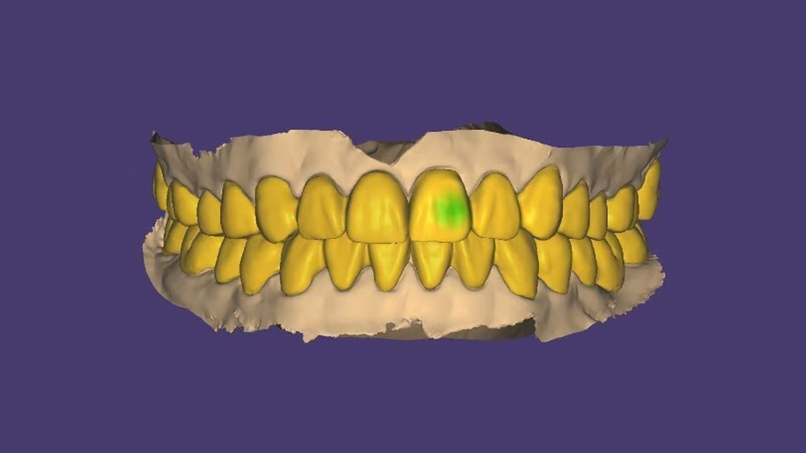
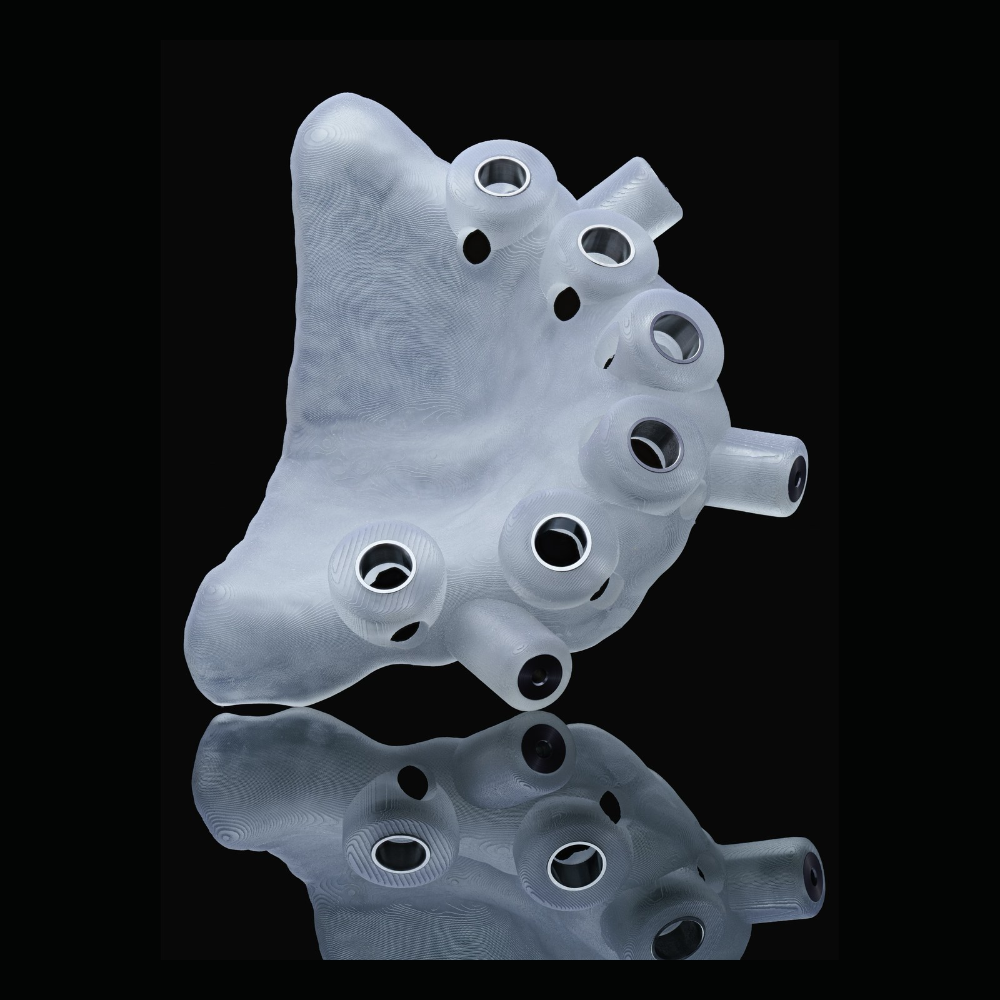
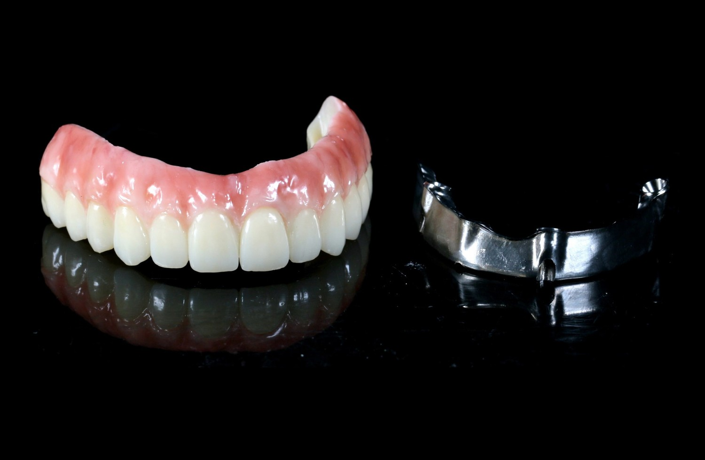

CAD restaurativo fisso
Corone singole, ponti, faccette, inlay, onlay, cappette e file CAD restaurativi preparati per la revisione tecnica e la produzione.
Design dentale digitale per laboratori e cliniche
Servizi CAD a listino per lavori digitali di routine, con supporto di pianificazione definito per casi riabilitativi complessi.
MW DenTech supporta laboratori odontotecnici e cliniche attrezzate digitalmente che necessitano di assistenza esterna nella progettazione di corone e ponti, lavori estetici, casi di impianti, splint, riabilitazione occlusale dell'intera bocca e riabilitazione implantare dell'intera arcata.
Il supporto principale di CAD è separato dai flussi di lavoro di riabilitazione strategica, in modo che i casi di progettazione di routine e i casi di ricostruzione in più fasi possano essere chiaramente individuati fin dall'inizio.
Supporto CAD compatto e orientato alla produzione per i casi in cui la posizione clinica e la direzione del trattamento sono già definite.
Corone singole, ponti, faccette, inlay, onlay, cappette e file CAD restaurativi preparati per la revisione tecnica e la produzione.

Progettazione del sorriso, ceratura digitale, morfologia dei denti anteriori, struttura, simmetria e flussi di lavoro estetici supportati da SmileCloud.

Monconi personalizzati, corone su impianti, restauri avvitati, design del profilo di emergenza e supporto protesico CAD per impianti.

Guida per impianto singolo CAD con siti implantari aggiuntivi tariffati in base all'ambito, oltre a design di chirurgia guidata ad arcata parziale quando il piano implantare e il protocollo del manicotto sono chiari.

Stecche Michigan, stecche di stabilizzazione, protezioni notturne, deprogrammatori e CAD per dispositivi di routine quando la posizione del morso è già prescritta.
Supporto di pianificazione strategico e specifico per i casi che necessitano di sequenziamento, verifica e coordinamento dal provvisorio al definitivo.
 AxisGuide
AxisGuide
Supporto di pianificazione basato su MRI/CBCT/STL selezionato per casi di riabilitazione restaurativa, ortodontica e dell'intera bocca gestiti da medici sensibili all'ATM.
Scopri AxisGuide
A bocca pienaRiabilitazione completa per dentatura usurata, alterazione VDO, correzione del piano occlusale, ceratura additiva, progettazione provvisoria e coordinazione restaurativa CAD finale.
 Arco completo
Arco completo
All-on-X e flussi di lavoro della dentatura terminale, inclusa la pianificazione dell'impianto dell'intera arcata, la progettazione della guida chirurgica, la pianificazione dei perni di fissaggio, la progettazione provvisoria a carico immediato, i flussi di lavoro di verifica e il supporto della protesi finale dell'intera arcata.

Rendiamo espliciti i dettagli pratici prima dell'inizio dei lavori su CAD, in modo che il tuo team sappia cosa verrà consegnato e quando potrà essere rivisto.
Le cartelle cliniche complesse sono sensibili. Manteniamo separati il pagamento, i file clinici e l'ambito del progetto in modo che i laboratori e le cliniche possano collaborare senza esporre informazioni non necessarie sui pazienti.
CaseHub centralizza l'acquisizione strutturata dei casi, la selezione dei denti, il caricamento dei file, il monitoraggio dello stato, la discussione dei casi e la consegna dei file in un unico spazio di lavoro privato. È destinato a cartelle cliniche rese anonime o ridotte al minimo quando possibile e la versione beta è solo su invito mentre MW DenTech convalida il flusso di lavoro con laboratori e cliniche selezionati.
Raccogli il codice del caso, il riepilogo della prescrizione, i denti selezionati, la scadenza, l'urgenza e i primi file prima che MW inizi la revisione dell'ambito.
Mantieni le domande dei partner, le note MW, la consegna dei file e il feedback di revisione collegati allo stesso riferimento al caso.
L'accesso viene introdotto in modo selettivo dopo aver definito l'ambito della prima collaborazione e concordato le aspettative di trasferimento dei dati.
Il prezzo del lavoro di progettazione di routine è calcolato in base alla collaborazione ricorrente. La pianificazione avanzata rimane prioritaria, quindi la revisione delle immagini, il sequenziamento, la verifica e le fasi provvisorie sono mirate alla cura di cui hanno bisogno.
Questi esempi anonimizzati mostrano il tipo di record, i risultati della pianificazione e i limiti clinici utilizzati quando un caso va oltre il prezzo del menu CAD.



I prezzi pubblicati aiutano i clienti a testare il lavoro CAD ripetibile. I prezzi indicati in EUR sono compensi professionali netti IVA esclusa, salvo diversa indicazione. Le voci su preventivo vengono definite individualmente quando il sequenziamento, la revisione delle immagini o la pianificazione provvisoria a fasi influiscono sul carico di lavoro.
Nota IVA: l’IVA spagnola viene applicata quando richiesta; l’aliquota standard è attualmente del 21%. I clienti B2B UE idonei possono essere fatturati con reverse charge quando vengono confermati dati IVA validi; le altre imposte applicabili sono gestite in base alla localizzazione del cliente e allo stato della fattura.
Costruito attorno alla vera economia del CAD dentale. I prezzi si riferiscono solo al supporto di progettazione e pianificazione CAD; stampa, produzione, componenti, spedizione, dazi doganali, IVA e altre imposte non sono inclusi se non diversamente indicato nel preventivo scritto o nella fattura. Il prezzo a volume è disponibile dopo aver dimostrato volume ricorrente, qualità dei file e modelli di revisione.
Il lavoro CAD con prezzo da menu può essere prezzato dal menu dopo la revisione del file. AxisGuide, i flussi di lavoro per tutta la bocca e per tutta l'arcata vengono esaminati per primi perché le fasi di registrazione, sequenziamento e verifica definiscono il carico di lavoro reale.
Seleziona un servizio CAD a prezzo di menu o identifica il caso come AxisGuide, riabilitazione completa della bocca o dell'arcata completa.
Controlliamo la qualità dei file, le librerie, le registrazioni dei morsi, l'imaging, il metodo di produzione e il percorso di trasferimento prima che il lavoro venga programmato.
I servizi CAD a prezzo di menu ricevono istruzioni di pagamento e fattura dopo la conferma dell'ambito; i casi complessi ricevono un preventivo scritto o una richiesta di deposito.
Il tuo team esamina lo CAD o i file di pianificazione prima della produzione o della fase clinica successiva.
Ideale per lavori ripetibili in cui le registrazioni, la posizione del morso, le librerie degli impianti e il metodo di produzione sono già chiari.
Prezzo dal menu netto pubblicato dopo la revisione del file e la conferma dell'ambito.
Richiedi preventivo a listinoIdeale per i casi in cui il sequenziamento, la revisione delle immagini, la strategia provvisoria o il coordinamento multidisciplinare influiscono sull'ambito.
Ambito individuale prima del preventivo scritto, del deposito o delle istruzioni di pagamento graduale.
Richiedi preventivoInvia scansioni intraorali, registrazioni del morso se rilevanti, formato di output, sistema CAD/CAM, materiale o metodo di produzione e tempi di consegna richiesti.
Invia scansioni, foto, registrazioni del morso o della relazione mascellare, riferimenti provvisori o cerature, VDO o obiettivi occlusali e MRI/CBCT se inclusi nell'ambito.
Invia CBCT/DICOM, piano dell'impianto o posizioni proposte, record scanbody o MUA, requisiti di fissazione, obiettivo provvisorio immediato e obiettivo della protesi finale.
Invia prima un caso rappresentativo. Confermiamo se si adatta ai prezzi del menu o se necessita di un preventivo mirato prima dell'inizio della progettazione.
Risposte brevi per laboratori e clinici prima del primo caso.
MW DenTech fornisce supporto per la progettazione e la pianificazione CAD. I prezzi sono compensi netti per CAD/design; stampa, fresatura, componenti, spedizione, dazi doganali, IVA e altre imposte non sono inclusi salvo accordo separato indicato nel preventivo scritto o in fattura.
È CAD di routine con una categoria di servizio chiara, registrazioni utilizzabili, posizione del morso prescritta, metodo di produzione noto e risultati prevedibili.
I casi complessi dipendono dal sequenziamento, dalla revisione delle immagini, dalla strategia provvisoria, dai registri di verifica e dal coordinamento interdisciplinare, quindi l'ambito deve essere confermato prima della determinazione del prezzo.
Una revisione tecnica è inclusa quando le registrazioni e le istruzioni originali rimangono invariate. Nuovi record, una nuova posizione del morso, un piano implantare modificato, una direzione modificata del trattamento o ulteriori risultati finali vengono gestiti come aggiornamento dell'ambito.
Utilizza un collegamento di caricamento concordato o un canale di trasferimento sicuro. Rimuovere le informazioni di identificazione del paziente quando possibile e mantenere le note di pagamento prive di dettagli clinici.
AxisGuide è disponibile per casi selezionati di riabilitazione sensibile all'ATM guidata da un medico. Fornisce un percorso strutturato basato sull'imaging per pianificare, testare e verificare una posizione mandibolare proposta prima della ricostruzione occlusale in scena.